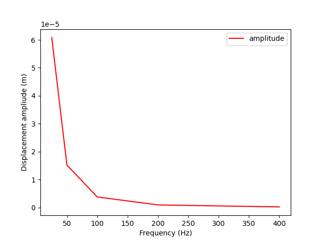
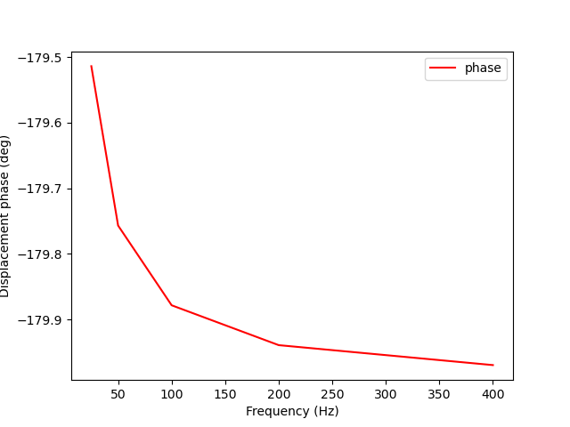

Note
Click here to download the full example code
Solve Harmonic Problem (with damping) Using Matrix Inverse¶
This example shows how to create an harmonic (over frequencies) fields container for an analysis with damping. This fields container is then used to solve the problem Ma+Dv+Ku =F by inversing the matrix
from ansys.dpf import core as dpf
from ansys.dpf.core import operators as ops
import math
Create 2D (x,y) matrix fields for inertia, damping and stiffness
freq = [25, 50,100, 200, 400]
dim = 2 #dimension of matrix
fM0 = dpf.fields_factory.create_matrix_field(1,dim,dim)
fM0.append([0., 1.,2., 3.],1)
fK0 = dpf.fields_factory.create_matrix_field(1,dim,dim)
fK0.append([4., 8.,0., 1.],1)
fC0 = dpf.fields_factory.create_matrix_field(1,dim,dim)
fC0.append([7., 5., 9., 1.],1)
Create a fields container for real and imaginary parts for each frequency
reals={}
ims={}
for k,f in enumerate(freq):
omega = 2.0 * math.pi * f
omega2=omega**2
real = fK0 +fM0*omega2
imag = fC0*omega
reals[f]=real.outputs.field()
ims[f]= imag.outputs.field()
cplx_fc = dpf.fields_container_factory.over_time_freq_complex_fields_container(reals, ims,time_freq_unit="Hz")
Use dpf’s operators to inverse the matrix, compute the amplitude and the phase
inverse = ops.math.matrix_inverse(cplx_fc)
component = ops.logic.component_selector_fc(inverse,0)
amp = ops.math.amplitude_fc(component);
phase = ops.math.phase_fc(component);
Get the phase and amplitude and plot it over frequencies
amp_over_frequency = amp.outputs.fields_container()
phase_over_frequency = phase.outputs.fields_container()
time_freq_support =amp_over_frequency.time_freq_support
amp_array=[]
phase_array=[]
for f in amp_over_frequency:
amp_array.append(f.data)
for f in phase_over_frequency:
phase_array.append(f.data*180.0/math.pi)
import matplotlib.pyplot as plt
plt.figure()
plt.plot(time_freq_support.time_frequencies.data, amp_array, 'r', label='amplitude')
plt.xlabel("Frequency (Hz)")
plt.ylabel("Displacement ampliude (m)")
plt.legend()
plt.show()
plt.figure()
plt.plot(time_freq_support.time_frequencies.data, phase_array, 'r', label='phase')
plt.xlabel("Frequency (Hz)")
plt.ylabel("Displacement phase (deg)")
plt.legend()
plt.show()
- 
- 
Total running time of the script: ( 0 minutes 0.277 seconds)